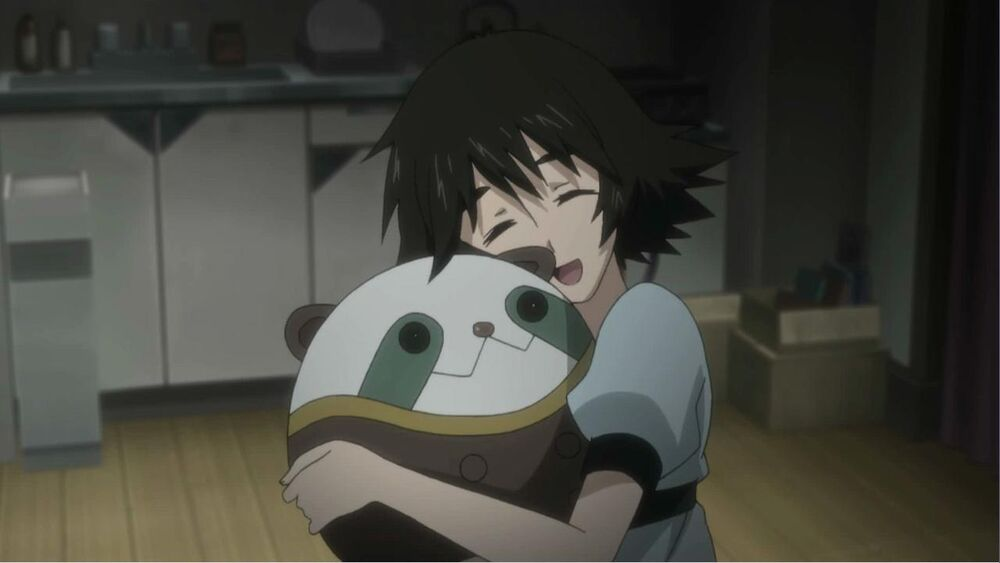

Mayuri Shiina
Mayuri Shiina (椎名 まゆり, Shīna Mayuri), also known as Mayushii☆, is one of the main characters of Steins; Gate and Steins; Gate 0. She is Rintaro Okabe's childhood friend, a part-time worker at May Queen Nyan-nyan and a member of the Future Gadget Lab. She is also an avid cosplay maker and friend of Luka Urushibara and Akiha Rumiho.
Personality
Mayuri possesses an extremely childish and naïve attitude for her age. While this may have something to do with her inability to accept the death of her grandmother when she was young, Okabe states at one point that she's always been a little bit different, though he never goes into any detail beyond this. Mayuri has a great fondness for cute things like Upa cushions, and likes to give cute nicknames to familiar people, like Okarin for Okabe, being a portmanteau of his last and first names Okabe Rintaro, even referring to herself as Mayushii, being a portmanteau of Mayuri Shiina.
Though appearing as one of the less intelligent members of the lab, according to Okabe, Mayuri is very perceptive, often being surprisingly quick to catch things no one else notices, and being good at understanding how others feel. Mayuri also does not question Daru's perverted comments and mannerisms, or is not in any way offended by them.
Despite being socially inept, she is also responsible for Rintaro's well-being, usually tending to his needs most of the time.
Background
As a child, Mayuri was close friends with Rintaro Okabe and they could often be seen together. However, after the death of her grandmother when Mayuri was 11, she entered a state of PTSD that caused her to be unable to talk to others, and could be seen in front of her grandmother's grave in the cemetery most of the time. Out of fear that something could happen to her, Rintaro tried to call out to her while when she was in the cemetery. One day, as Mayuri raised her hand towards the sky after it stopped raining, Rintaro's fear reached its limit, and he rushed to hug her, proclaiming to be a "mad scientist" and that Mayuri was his "hostage", and that, therefore, she was not allowed to go away. Fortunately, his new persona he created helped her overcome her immense grief and went back to normal.
Skills
|
|
|
|